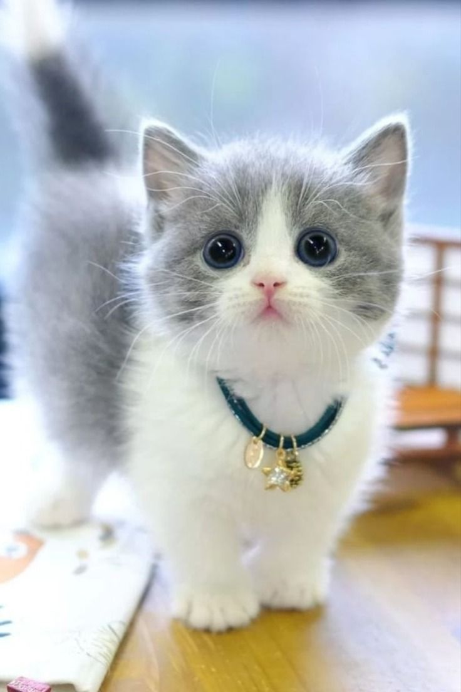

Mundo Gato
INICIO
RAZAS
CUIDADOS
CONTACTO
Les dejamos información útil en sus primeros pasos a la adopción de su mascota.

Ver otra imagen
Juegos y Juguetes
Veterinaria de Gatos
Asociación Felina TICA (Registro de Pedigree)
Spa para Felinos
Peluquería solo gatos
Gatos Outfits
Donde llevarlos de paseo: